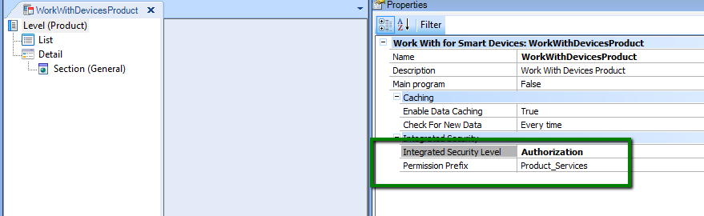
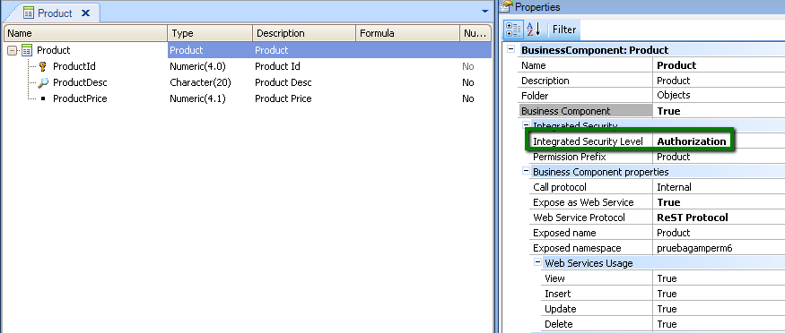
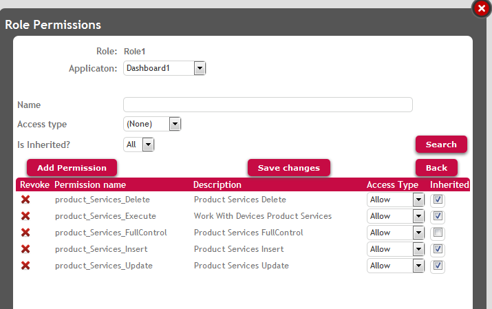
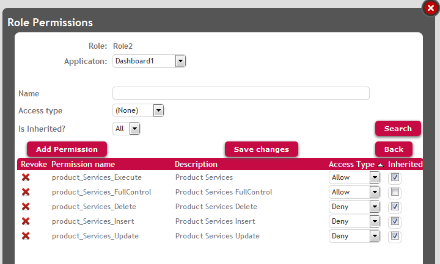
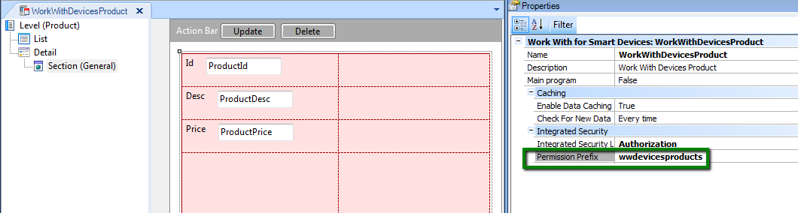
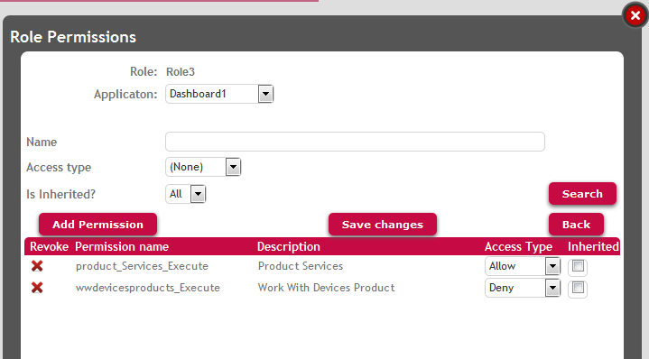

|
Suppose we have a Smart Devices Application which allows users to see all the products a company distributes.
Imagine that a security requirement is that both for navigating the products catalog and updating the data, authorization is required.
Besides, the authorization permissions for the former are not the same as for the latter.
Objects of the application:
- Product Transaction (Business Component)
- Dashboard1 (Dasboard object up to GeneXus Evolution 3) which has the following item:
- WorkWithDevicesProduct (WWSD object which lists all the products). By selecting one item of this list you can view the detail of the product; and update, or delete the product if desired. There is also the possibility of adding a new product by using the menu of this object.
Only authorized users can execute the WorkWithDevicesProduct object (see the products list and products detail), and other users with different permissions, can execute insert, update, delete over the "products" Business Component.
Note that the actions in WWSD panels (insert, update, delete) are related directly to the Business Component associated with the WWSD and not the WWSD itself. That means that, if you apply Work With Pattern for Smart Devices to a transaction ("Product"), the "Product" transaction is automatically saved as Business Component exposed as REST web service. In order to control permissions over the actions insert, update, delete, you need to declare permissions over the Business Component itself.
On the other hand, the permissions over the list and view of the item's list are managed in the WWSD object.
One possibility is to set Default Integrated Security Level Property to "Authentication" at version level, and configure Integrated Security Level Property to "Authorization" for "WorkWithDevicesProduct" object and "Product" transaction.

Figure 1.

Figure 2.
Otherwise, Default Integrated Security Level Property at version level can be set to "Authorization" and "WorkWithDevicesProduct" and "Product" transaction objects can take the property value from the environment.
Afterward, we need to create two different roles, one of them (Role1) will enable users to execute the products list, see the products detail, and update the data also (insert, update and delete products).
Another role (Role2) will enable users to execute the products list but deny the permissions over data update, insert, and delete.
See the following figures for the definition of the roles:

Figure 3. Role1 definition.

Figure 4. Role2 definition.
In order to give the user permissions to insert a new product, you need to give to him "product_services_insert" permission, where "product" is the Permission Prefix Property value set in Product transaction (see figure 2).
The same idea with the update and delete permissions, "product_services_update" and "product_services_delete" permissions need to be defined.
These permissions ("product_services_insert", "product_services_update", and "product_services_delete") require "product_services_execute" permission (that is to say, if this permission is not allowed, none of the others can be).
"product_services_execute" is the permission to GET the Business Component data.
Note that Permission Prefix Property of WorkWithDevicesProduct is set by default to the "Product services" value (see Figure 1).
This means that if "product_services_execute" permission is allowed (which implies that the user can GET the Business Component data), he will also be able to execute WorkWithDevicesProduct by default. That's why users with Role2 will be able to execute WorkWithDevicesProduct and navigate through the products list.
As a consequence of the configuration shown, users with role2 will not be allowed to update products, and users with role1 will be able to do it (to be strict, if a user has any role where the permissions are denied, they will not be able to update data, see Permission Access Type for more details).
Users with Role1 as well as users with Role2 have "product_services_execute" permission, so both will be able to execute the Product Business Component in order to GET data (read data). Both will be able to execute "WorkWithDevicesProduct" object because of the Permission Prefix property value of this object.
1. Permission Prefix Property of WorkWithDevicesProduct is set by default to the "Product_services" value.
This is in order to make easier the administration of permissions, it's assumed that a user who will be able to GET (read) the Business Component data, will also be able to execute the WWSD related to this Business Component. But this is a default option and can be changed as Approach #2 explains at the bottom of this page.
2. We define "<BusinessComponentPermissionPrefix>_services_mode" permissions because the transaction in case of SD applications is executed as a Business Component exposed as REST Web Services. See Automatic Permissions generated by GeneXus for more details.
If you want to discriminate the permission to execute the Business Component and GET the data, from executing the WorkWithDevicesProduct object, you may do the following:
Assign a different Permission Prefix for WorkWithDevicesProduct object (other than "product_services"). See the following figure where the permission prefix assigned is "wwdevicesproducts":

Figure 5.
Define a role where "wwdevicesproducts_execute" permission is denied and "product_services_execute" is allowed. The users assigned to this role will be able to GET the Business Component data, but not to execute the WorkWithDevicesProduct object.

Figure 6.
Automatic Permissions generated by GeneXus
GAM Roles
GAM Authorization Scenarios
|